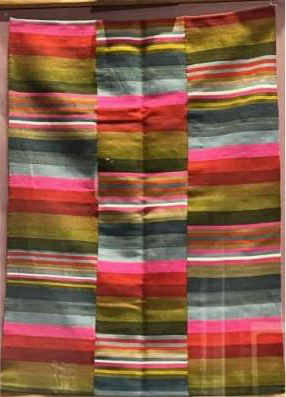
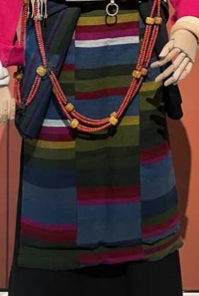
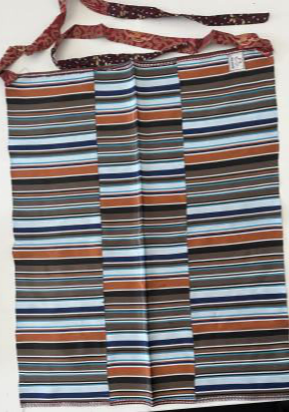
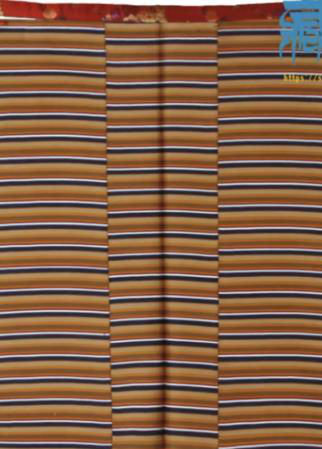
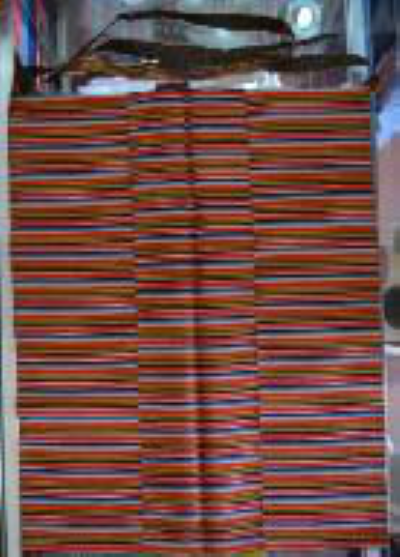
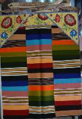
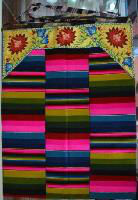
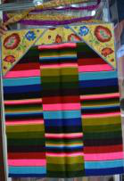
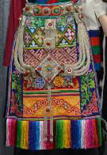
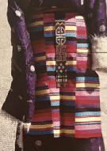

从不同角度认识邦典家族，材质、工艺、地域、色彩各有特色，快来探索这些美丽的邦典姐妹吧！
以蚕丝为原料，质地柔软光滑，色彩鲜艳亮丽，是邦典中的精品，多用于节庆典礼等重要场合。
以羊毛为原料，采用传统氆氇织造工艺，质地厚实保暖，适合高原寒冷气候，是日常穿着的主流选择。
以棉布或混纺布为原料，质地轻薄透气，价格相对低廉，适合日常劳作穿着。
采用精纺工艺，纱线细密均匀，织造密度高，图案精美细腻，代表最高工艺水平，多为贵族或庆典使用。
采用粗纺工艺，纱线较粗，织造较为粗犷，注重实用性和保暖性，是普通民众日常穿着的主要类型。
最受欢迎的分类方式！根据花纹和颜色，邦典家族有六位美丽的成员，各有独特的风采：

宽条纹彩虹色彩邦典，色彩丰富艳丽，条纹宽阔醒目，通常为年长妇女在节庆典礼时穿戴。
以白色为主调，搭配其他颜色条纹，清新淡雅，是青年女性喜爱的款式，节庆典礼时小女孩也常穿戴。

以绿色为主调，搭配蓝绿色系，色调沉稳典雅，主要为中年女性穿戴，日喀则地区尤为流行。

以蓝色为主调，搭配浅蓝色和深棕色，色彩对比鲜明，主要为城镇居民穿戴。

以黄色为主调，体现藏传佛教崇拜思想，是尼姑常穿戴的邦典，也被称为"扎苏"。
指只有三种颜色的邦典，色彩搭配简洁大方，主要为城镇居民日常穿戴。
| 邦典名称 | 特点描述 | 主要穿戴者 |
|---|---|---|
| 噶擦 | 以白色条纹为主 | 节庆典礼时的小女孩 |
| 擦钦 | 宽条纹样式 | 节庆典礼时的老年妇女 |
| 降加则 | 色彩庄重典雅 | 40岁以上妇女（节庆） |
| 色夏 | 黄色调为主 | 尼姑 |
| 俄穷 | 简洁朴素 | 15岁以下小女孩 |
| 夏扎白萨 | 贵族风格 | 青年妇女 |
| 察绒白萨 | 贵族风格 | 青年妇女 |
据《西藏藏族服饰》记载，邦典的式样和花纹在地域上差异十分突出。除林芝地区无穿戴习惯外，西藏各地形成了各具特色的邦典风格，主要分为拉萨、山南、日喀则、昌都、牧区、那曲、阿里七大色彩区域。

色彩均衡和谐，纹样精致典雅，融合各地特色，体现中心城市的审美标准。

色彩鲜艳丰富，纹样多样，杰德秀镇是著名的邦典织造中心，地域特色鲜明。

偏爱蓝绿冷色调，色彩沉稳典雅，中年女性款式居多，风格端庄大方。
受东部文化影响，纹样多样，色彩对比强烈，兼具藏汉风格特色。

注重实用性，色彩温暖厚重，材质厚实保暖，适合高原游牧生活。

那曲地区特色鲜明，以梯形邦典为主，下摆有长穗装饰，两侧有氆氇镶边加固，极具地域特色。

阿里地区邦典风格粗犷大气，色彩对比强烈，体现了西部高原独特的文化风貌和审美情趣。